Linear regression is a common statistical method that models the relationship between a dependent (response) variable and one or more independent (explanatory) variables. The relationship is modeled with the equation for a straight line (\(y = a + bx\)).
With linear regression we can answer questions such as:
How does the dependent (response) variable change with respect to the independent (explanatory) variable?
What amount of variation in the dependent variable can be explained by the independent variable?
Is there a statistically significant relationship between the dependent variable and the independent variable?
Does the linear model fit the data well?
In this chapter / lesson we will explore what is linear regression and how to use it to answer these questions. We’ll cover the following topics:
Why use linear regression?
What is the linear regression model?
Fitting the regression model (= finding the intercept and the slope).
Is linear regression a good enough model to use?
What do we do when things go wrong?
Transformation of variables/the response.
Identifying and handling odd data points (aka outliers).
In this chapter / lesson we will not discuss the statistical significance of the model. We will cover this topic in the next chapter / lesson.
Why use linear regression?
It’s a good starting point because it is a relatively simple model.
Relationships are sometimes close enough to linear.
It’s easy to interpret.
It’s easy to use.
It’s actually quite flexible (e.g. can be used for non-linear relationships, e.g., a quadratic model is still a linear model!!!).
An example - blood pressure and age
There are lots of situations in which linear regression can be useful. For example, consider hypertension. Hypertension is a condition in which the blood pressure in the arteries is persistently elevated. Hypertension is a major risk factor for heart disease, stroke, and kidney disease. It is estimated that hypertension affects about 1 billion people worldwide. Hypertension is a complex condition that is influenced by many factors, including age. In fact, it is well known that blood pressure increases with age. But how much does blood pressure increase with age? This is a question that can be answered using linear regression.
Here is an example of a study that used linear regression to answer this question: https://journals.lww.com/jhypertension/fulltext/2021/06000/association_of_age_and_blood_pressure_among_3_3.15.aspx
In this study, the authors used linear regression to model the relationship between age and blood pressure. They found that systolic blood pressure increased by 0.28–0.85 mmHg/year. This is a small increase, but it is statistically significant. This means that the observed relationship between age and blood pressure is unlikely to be due to chance.
Lets look at some simulated example data:
# Load the databp_age_data <-read.csv("datasets/Simulated_Blood_Pressure_and_Age_Data.csv")# How many data points with both age and blood pressure?bp_age_data <-na.omit(bp_age_data)# No rows with missing values# Visualize the dataggplot(bp_age_data, aes(x = Age, y = Systolic_BP)) +geom_point() +labs(title ="Systolic Blood Pressure vs. Age",x ="Age",y ="Systolic Blood Pressure")
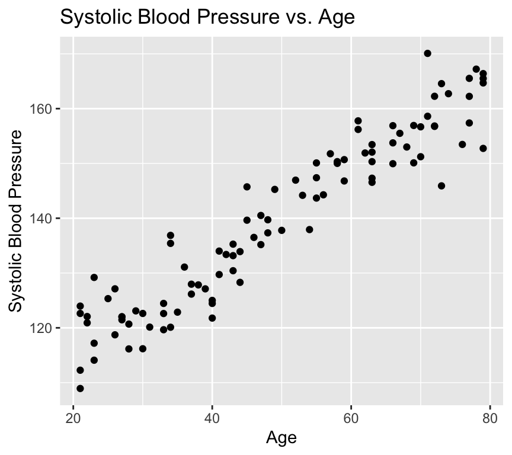
Well, that is pretty conclusive. We hardly need statistics. There is a clear positive relationship between age and systolic blood pressure. But how can we quantify this relationship? And in less clear-cut cases what is the strength of evidence for a relationship? This is where linear regression comes in. Linear regression models the relationship between age and systolic blood pressure. With linear regression we can answer the following questions:
What is the value of the intercept and slope of the relationship?
Is the relationship different from what we would expect if there were no relationship?
How well does the mathematical representation match the observed values?
How much uncertainty is there in predictions?
Lets try to figure some of these out from the visualisation.
Calculating the intercept and slope
Regression from a mathematical perspective
Given an independent/explanatory variable (\(X\)) and a dependent/response variable (\(Y\)) all points \((x_i,y_i)\), \(i= 1,\ldots, n\), on a straight line follow the equation
\[y_i = \beta_0 + \beta_1 x_i\ .\]
\(\beta_0\) is the intercept - the value of \(Y\) when \(x_i = 0\)
\(\beta_1\) the slope of the line, also known as the regression coefficient of \(X\).
If \(\beta_0=0\) the line goes through the origin \((x,y)=(0,0)\).
Interpretation of linear dependency: proportional increase in \(y\) with increase (decrease) in \(x\).
Finding the intercept and the slope
In a regression analysis, one task is to estimate the intercept and the slope. These are known as the regression coefficients\(\beta_0\), \(\beta_1\).
Problem: For more than two points \((x_i,y_i)\), \(i=1,\ldots, n\), there is generally no perfectly fitting line.
Aim: We want to estimate the parameters \((\beta_0,\beta_1)\) of the best fitting line \(Y = \beta_0 + \beta_1 x\).
Idea: Find the best fitting line by minimizing the deviations between the data points \((x_i,y_i)\) and the regression line. I.e., minimising the residuals.
But which deviations?
These ones?
Or these?
Or maybe even these?
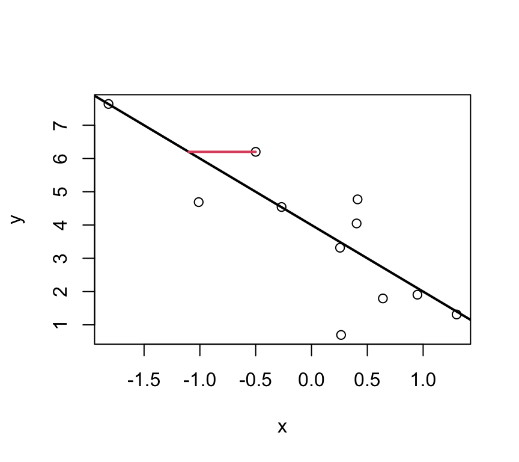
Well, actually its none of these!!!
Least squares
For multiple reasons (theoretical aspects and mathematical convenience), the intercept and slope are estimated using the least squares approach. In this, yet something else is minimized:
The parameters \(\beta_0\) and \(\beta_1\) are estimated such that the sum of squared vertical distances (sum of squared residuals / errors) is minimised.
SSE means Sum of Squared Errors:
\[SSE = \sum_{i=1}^n e_i^2 \]
where,
\[e_i = y_i - \underbrace{(\beta_0 + \beta_1 x_i)}_{=\hat{y}_i} \]Note:\(\hat y_i = \beta_0 + \beta_1 x_i\) are the predicted values.
In the graph just below, one of these squares is shown in red.
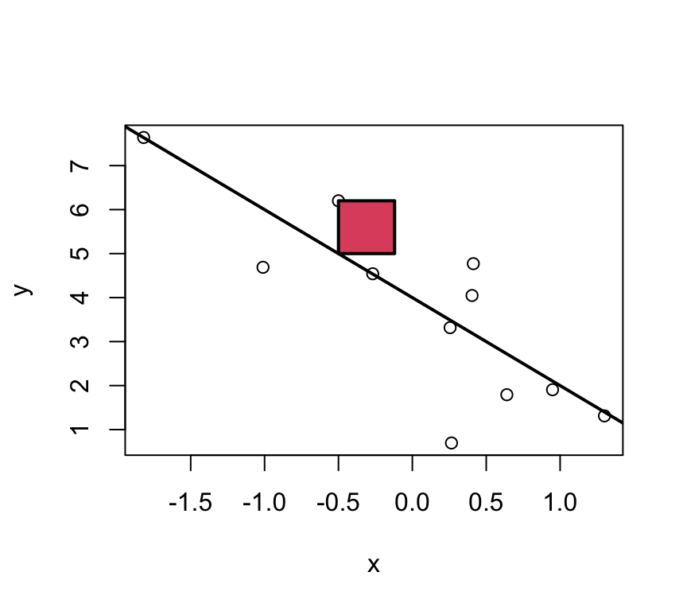
Note
Residuals are model-based quantities, not properties of the raw data.
Least squares estimates
With a linear model, we can calculate the least squares estimates of the parameters \(\beta_0\) and \(\beta_1\) directly using the following formulas.
For a given sample of data \((x_i,y_i), i=1,..,n\), with mean values \(\overline{x}\) and \(\overline{y}\), the least squares estimates \(\hat\beta_0\) and \(\hat\beta_1\) are computed as
is an unbiased estimate of the residual variance \(\sigma^2\).
(Derivations of the equations above are in the Stahel script 2.A b. Hint: differentiate, set to zero, solve.)
Why division by \(n-2\) ensures an unbiased estimator
When estimating parameters (\(\beta_0\) and \(\beta_1\)), the square of the residuals is minimised. This fitting process inherently uses up two degrees of freedom, as the model forces the residuals to sum to zero and aligns the slope to best fit the data. I.e., one degree of freedom is lost due to the estimation of the intercept, and another due to the estimation of the slope.
The adjustment (division by \(n-2\) instead of \(n\)) compensates for the loss of variability due to parameter estimation, ensuring the estimator of the residual variance is unbiased. Mathematically, dividing by n - 2 adjusts for this loss and gives an accurate estimate of the population variance when working with sample data.
We’ll look at degrees of freedom in more detail later, so don’t worry if this is a bit confusing right now.
ggplot(bp_age_data, aes(x = Age, y = Systolic_BP)) +geom_point() +labs(x ="Age (years)", y ="Systolic Blood Pressure (mmHg)")
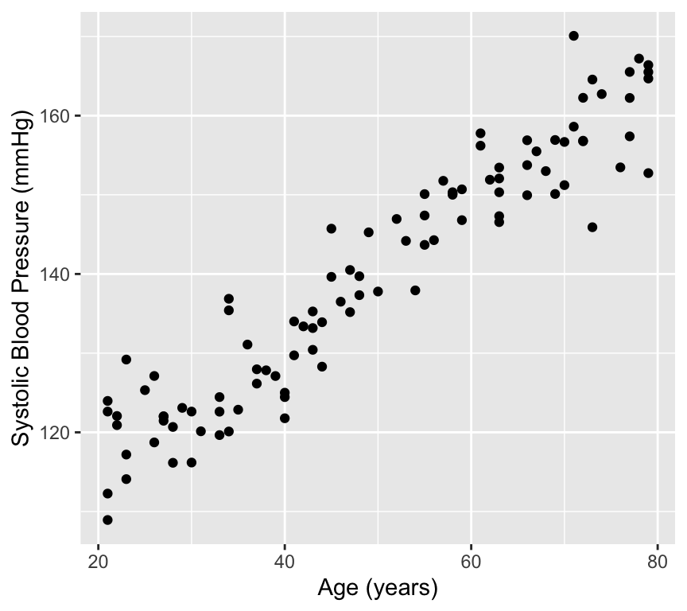
Then we make the linear model, using the lm() function:
bp_age_model <-lm(Systolic_BP ~ Age, data = bp_age_data)
Then we can look at the summary of the model. It contains a lot of information, so can be a bit confusing at first.
summary(bp_age_model)
Call:
lm(formula = Systolic_BP ~ Age, data = bp_age_data)
Residuals:
Min 1Q Median 3Q Max
-13.2195 -3.4434 -0.0808 3.1383 12.6025
Coefficients:
Estimate Std. Error t value Pr(>|t|)
(Intercept) 98.96874 1.46102 67.74 <2e-16 ***
Age 0.82407 0.02771 29.74 <2e-16 ***
---
Signif. codes: 0 '***' 0.001 '**' 0.01 '*' 0.05 '.' 0.1 ' ' 1
Residual standard error: 4.971 on 98 degrees of freedom
Multiple R-squared: 0.9002, Adjusted R-squared: 0.8992
F-statistic: 884.4 on 1 and 98 DF, p-value: < 2.2e-16
How do our guesses of the intercept and slope compare to the guesses we made earlier?
Recal that the units of the Age coefficient are in mmHg per year. This means that for each additional year of age, the systolic blood pressure increases by ´r round(coef(bp_age_model)[2],2)´ mmHg.
Dealing with the error
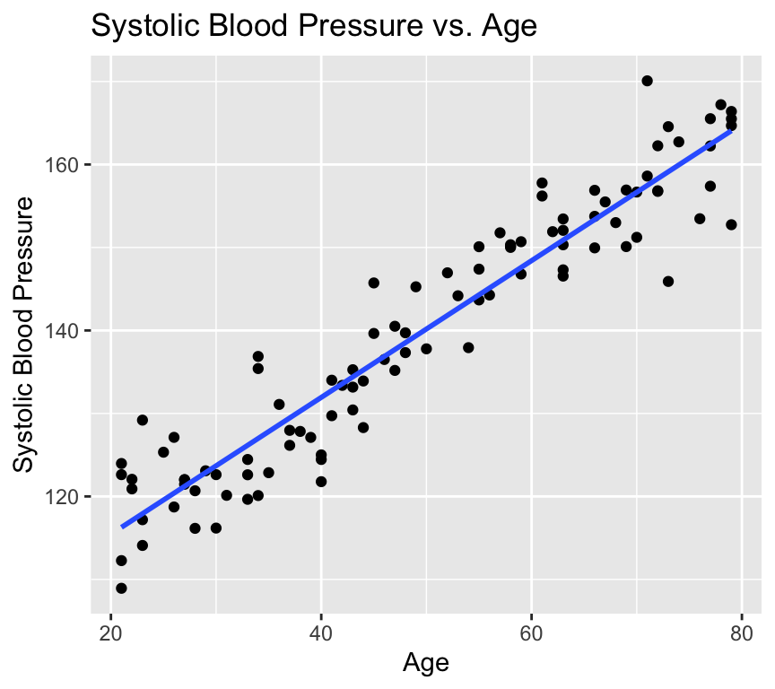
The line is not a perfect fit to the data. There is scatter around the line.
Some of this scatter could be caused by other factors that influence blood pressure, such as diet, exercise, and genetics. Also, the there could be differences due to the measurement instrument (i.e., some measurement error).
These other factors are not included in the model (only age is in the model), so they create variation that can only appear in error term.
In the linear regression model the dependent variable \(Y\) is related to the independent variable \(x\) as
\[Y = \beta_0 + \beta_1 x + \epsilon \ \] where
\(\epsilon\) is the error term
\(\beta_0\) is the intercept
\(\beta_1\) is the slope
\(\epsilon\) is the error term.
The error term captures the difference between the observed value of the dependent variable and the value predicted by the model. The error term includes the effects of other factors that influence the dependent variable, as well as measurement error.
Graphically the error term is the vertical distance between the observed value of the dependent variable and the value predicted by the model.
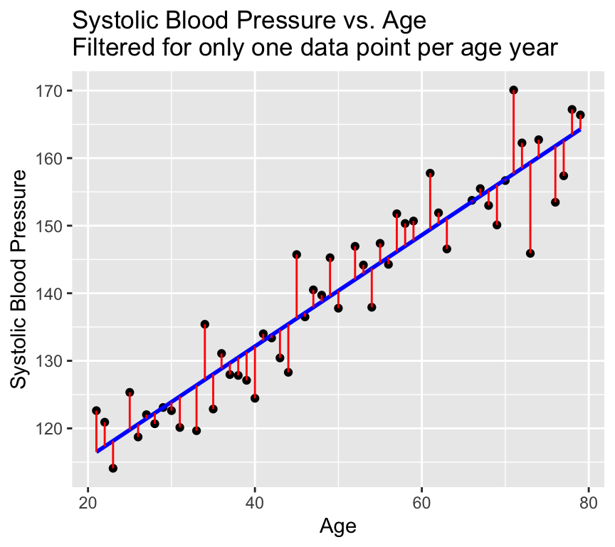
The error term is also known as the residual. It is the variation that resides (is left over / is left unexplained) after accounting for the relationship between the dependent and independent variables.
Example in R
Let’s look at observed values, expected (predicted) values, and residuals (error) in R.
The observed values of the response (dependent) variable are already in the dataset:
Now we have a model that gives the expected values (on the regression line) and that gives us a residual. Because the expected value plus the residual equals the observed value, if we use each of the residuals as the error for each respective data point, we end up with a perfect fit to the data. All we are doing is describing the observed data in a different way. This is known as over-fitting. In fact, we have gained very little by fitting the model. We have simply memorized / copied the data!!!
In order to avoid this, we need to assume something about the residuals – we need to model the residuals. The most common model for the residuals is a normal distribution with mean 0 and constant variance.
\[\epsilon \sim N(0,\sigma^2)\]
This is known as the normality assumption. The normality assumption is important because it allows us to make inferences about the population parameters based on the sample data.
The linear regression model then becomes:
\[Y = \beta_0 + \beta_1 x + N(0,\sigma^2) \ \]
where \(\sigma^2\) is the variance of the error term. The variance of the error term is the amount of variation in the dependent variable that is not explained by the independent variable. The variance of the error term is also known as the residual variance.
An alternate and equivalent formulation is that \(Y\) is a random variable that follows a normal distribution with mean \(\beta_0 + \beta_1 x\) and variance \(\sigma^2\).
\[Y \sim N(\beta_0 + \beta_1 x, \sigma^2)\]
So, the answer to the question “how do we deal with the error term” is that we model the error term as normally distributed with mean 0 and constant variance. Put another way, the error term is assumed to be normally distributed with mean 0 and constant variance.
Back to blood pressure and age
The mathematical model in this case is:
\[SystolicBP = \beta_0 + \beta_1 \times Age + \epsilon\]
where: SystolicBP is the dependent (response) variable, \(\beta_0\) is the intercept, \(\beta_1\) is the coefficient of Age, Age is the independent (explanatory) variable, \(\epsilon\) is the error term.
Let’s ensure we understand this, by thinking about the units of the variables in this model. This can be very useful because it can help us to understand the model better and to check that the model makes sense.
Is the model good enough to use?
All models are wrong, but is ours good enough to be useful?
Are the assumption of the model justified?
It would be very unwise to use the model before we know if it is good enough to use.
Don’t jump out of an aeroplane until you know your parachute is good enough!
What assumptions do we make?
We already heard about one. We assume that the residuals follow a \(N(0,\sigma^2)\) distribution (that is, a Gaussian / Normal distrution with mean of zero and variance of \(\sigma^2\)). We make this assumption because it is often well enough met, and it gives great mathematical tractability.
This assumption implies that:
The \(\epsilon_i\) are normally distributed.
\(\epsilon_i\) has constant variance: \(Var(\epsilon_i)=\sigma^2\).
The \(\epsilon_i\) are independent of each other.
Note
These assumptions are about the residuals, not the observed data!!!
Furthermore:
we assumed a linear relationship.
implies there are no outliers (implied by (a) above)
Lets go through each five assumptions.
(a) Normally distributed residuals
Recall that we make the assumption that the residuals are normally distributed with mean 0 and constant variance:
\[\epsilon \sim N(0,\sigma^2)\]
Here we are concerned with the first part of this assumption, that the residuals are normally distributed.
What does this mean? How can we check it?
A normal distribution is symmetric and bell-shaped…
Lets look at the frequency distribution of the residuals of the linear regression of blood pressure and age:
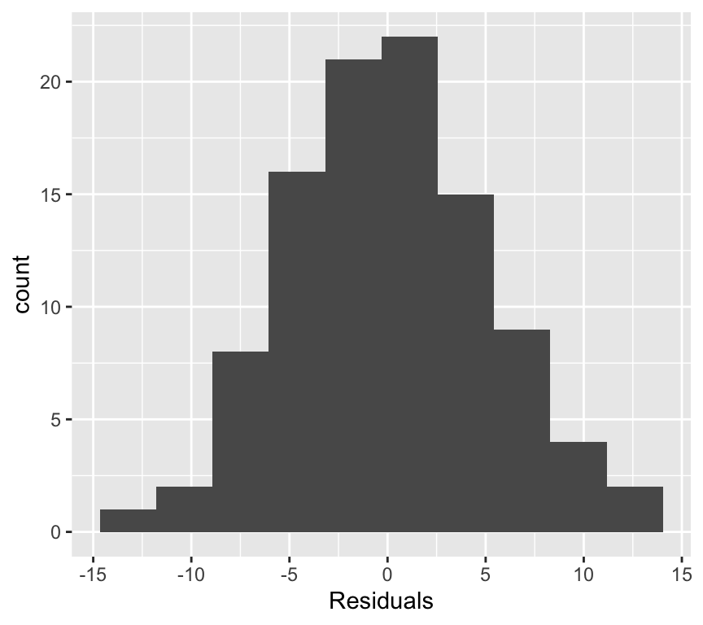
The normal distribution assumption (a) seems ok as well.
(a) Normally distributed residuals: The QQ-plot
Usually, not the histogram of the residuals is plotted, but the so-called quantile-quantile (QQ) plot. The quantiles of the observed distribution are plotted against the quantiles of the respective theoretical (normal) distribution:
If the points lie approximately on a straight line, the data is fairly normally distributed.
This is often “tested” by eye, and needs some experience.
But what on earth is a quantile???
Imagine we make 21 measures of something, say 21 blood pressures:
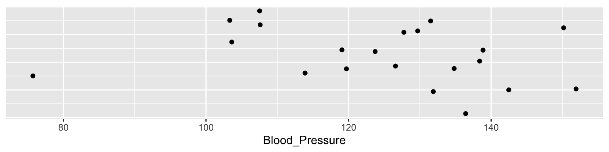
The median of these is 127.8. The median is the 50% or 0.5 quantile, because half the data points are above it, and half below.
quantile(dd$Blood_Pressure, 0.5)
50%
127.8
The theoretical quantiles come from the normal distribution. The sample quantiles come from the distribution of our residuals.
How do I know if a QQ-plot looks “good”?
There is no quantitative rule to answer this question. Instead experience is needed. You can gain this experience from simulations. To this end, we can generate the same number of data points of a normally distributed variable and compare this simulated qqplot to our observed one.
Example: Generate 100 points \(\epsilon_i \sim N(0,1)\) each time:
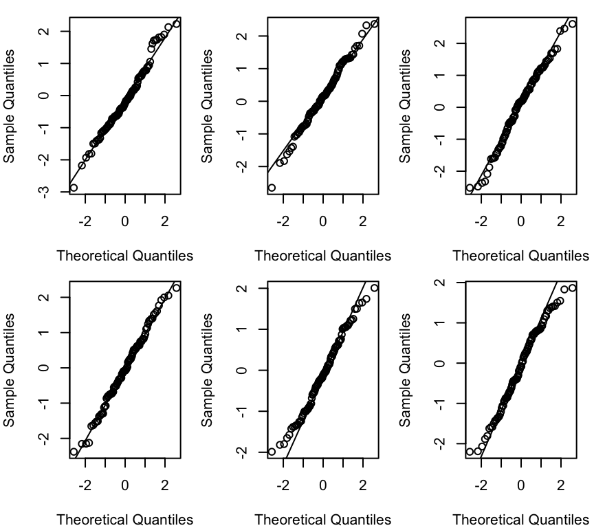
Each of the graphs above has data points that are randomly generated from a normal distribution. In all cases the data points are close to the line. This is what we would expect if the data were normally distributed. The amount of deviation from the line is what we would expect from random variation, and so seeing this amount of variation in a QQ-plot of your model should not be cause for concern.
(b) Constant error variance (homoscedasticity)
Recall that we assume the errors are normally distributed with constant variance \(\sigma^2\):
\[\epsilon_i \sim N(0, \sigma^2)\]
Here we’re concerned with the second part of this assumption, that the variance is constant.That is, variance of the residuals is a constant: \(\text{Var}(\epsilon_i) = \sigma^2\). And not, for example \(\text{Var}(\epsilon_i) = \sigma^2 \cdot x_i\).
Put another way, we’re interested if the size of the residuals tends to show a pattern with the fitted values. By size of the residuals we mean the absolute value of the residuals. In fact, we often look at the square root of the absolute value of the standardized residuals:
\[R_i = \frac{\epsilon_i}{\hat{\sigma}}\] Where \(\hat{\sigma}\) is the estimated standard deviation of the residuals:
To look to see if the variance of the residuals is constant, we need to see if there is any relationship between the size of the residuals and the fitted values. A commonly used visualistion for this is a plot of the size of the residuals against the fitted values.
Lets first calculated the \(\sqrt{|R_i|}\) values for our blood pressure model:
And now visualise the relationship between the fitted values and the size of the residuals:
ggplot(bp_age_data, aes(x = fitted, y = sqrt_abs_R_i)) +geom_point() +labs(x ="Fitted values", y =expression(sqrt(abs(R[i]))))
This graph is known as the scale-location plot. It is particularly suited to check the assumption of equal variances (homoscedasticity / Homoskedastizität). There should be no trend or pattern.
Tip
We can also use the built-in plot function for linear models to create this plot. It is the third plot in the set of model checking plots.
plot(bp_age_model, which=3, add.smooth =FALSE)
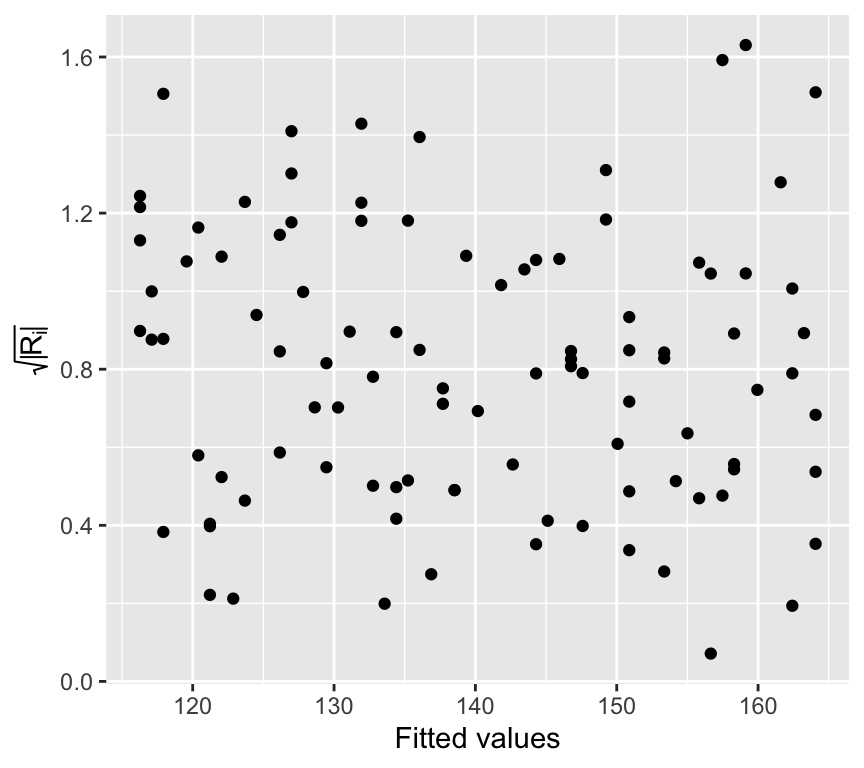
How it looks with the variance increasing with the fitted values
Here’s a graphical example of how it would look if the variance of the residuals increases with the fitted values.
And here the scale-location plot for a linear model of that data:
m <-lm(y~x)plot(m,which=3)
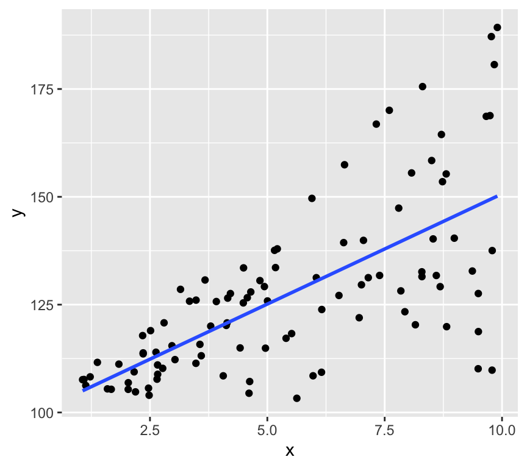
(c) Independence (residuals are independent of each other)
We assume that the residuals (\(\epsilon_i\)) are independent of each other. This means that the value of one residual is not somehow related to the value of another.
The dataset about blood pressure we looked at contained 100 observations, each one made from a different person. In such a study design, we could be safe in the assumption that the people are independent, and therefore the assumption that the residuals are independent.
Imagine, however, if we had 100 observations of blood pressure collected from 50 people, because we measured the blood pressure of each person twice. In this case, the residuals would not be independent, because two measures of the blood pressure of the same person are likely to be similar. A person is likely to have a high blood pressure in both measurements, or a low blood pressure in both measurements. This would mean they have a high residual in both measurements, or a low residual in both measurements.
In this case, we would need to account for the fact that the residuals are not independent. We would need to use a more complex model, such as a mixed effects model, to account for the fact that the residuals are not independent. We will talk about this again in the last week of this course.
In general, you should always think about the study design when you are analysing data. You should always think about whether the residuals are likely to be independent of each other. If they are not, you should think about how you can account for this in your analysis.
A good way to assess if there could be dependencies in the residuals is to be critical about what is the unit of observation in the data. In the blood pressure example, the unit of observation is the person. Count the number of persons in the study. If there are fewer persons than observations, then at least some people must have been measured at least twice. Repeating measures on the same person is a common way to get dependent residuals.
So, to check the assumption of independence, you should:
Think carefully about the study design.
Think carefully about the unit of observation in the data.
Compare the number of observations to the number of units of observation.
(d) Linearity assumption
The linearity assumption states that the relationship between the independent variable and the dependent variable is linear. This means that the dependent variable changes by a constant amount for a one-unit change in the independent variable. And that this slope is does not change with the value of the independent variable.
The blood pressure data seems to be linear:
Warning: `fortify(<lm>)` was deprecated in ggplot2 3.6.0.
ℹ Please use `broom::augment(<lm>)` instead.
ℹ The deprecated feature was likely used in the ggplot2 package.
Please report the issue at <https://github.com/tidyverse/ggplot2/issues>.
At low values of \(y\), the residuals are positive, at intermediate values of \(y\) the residuals are negative, and at high values of \(y\) the residuals are positive. This pattern in the residuals is a sign that the relationship between \(x\) and \(y\) is not linear.
We can plot the value of the residuals against the \(y\) value directly, instead of looking at the pattern in the graph above. This is called a Tukey-Anscombe plot. It is a graph of the residuals versus the fitted \(y\) values:
ggplot(mapping =aes(x =fitted(m), y =resid(m))) +geom_point() +geom_hline(yintercept =0, linetype="dashed", color="red")
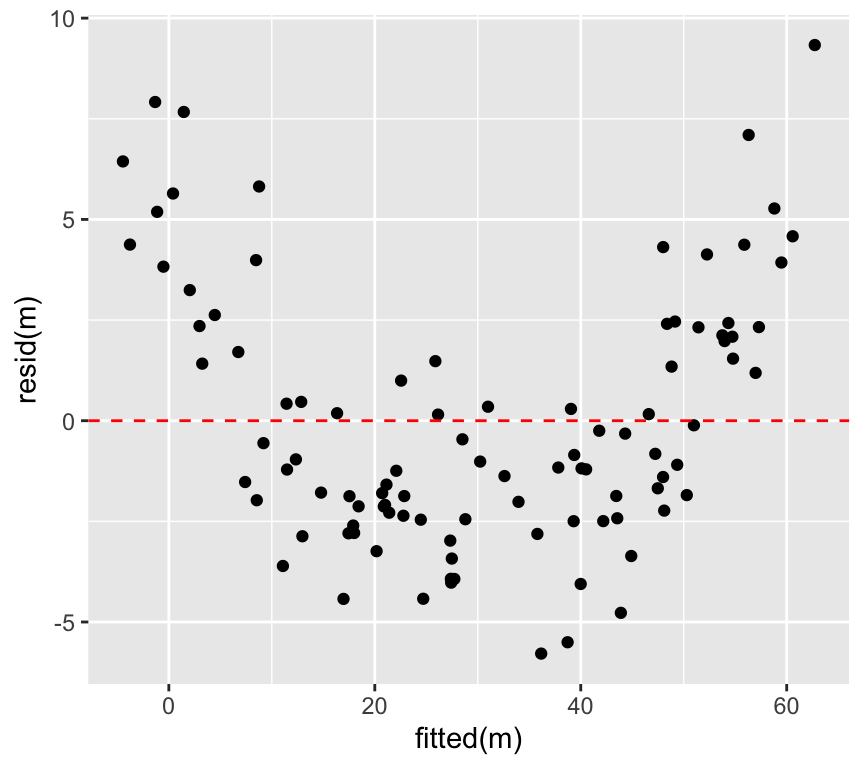
We can very clearly see pattern in the residuals in this Tukey-Anscombe plot. The residuals are positive, then negative, then positive, as the fitted \(y\) value gets larger.
We can also make this Tukey-Anscombe plot using the built-in plot function for linear models in R:
plot(m, which=1)
The red line in the Tukey-Anscombe plot is a loess smooth. It is automatically added to the plot. It is a way of estimating the pattern in the residuals. If the red line is not flat, then there is a pattern in the residuals. However, the loess smooth is not always reliable. It is a good idea to look at the residuals directly, without this smooth.
plot(m, which=1, add.smooth =FALSE)
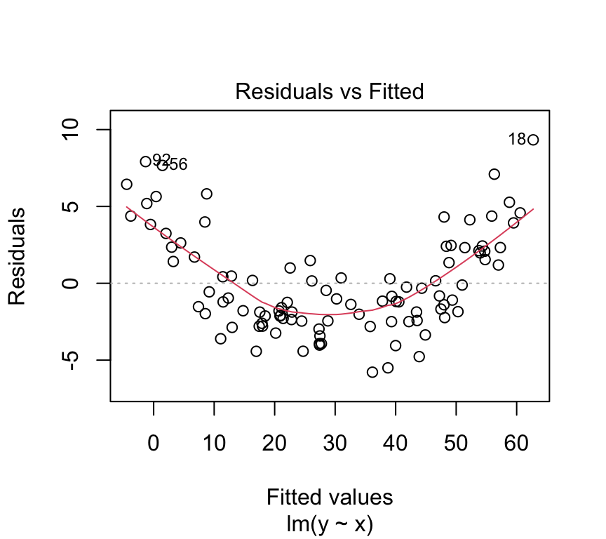
The data here is simulated to show a very clear pattern in the residuals. In real data, the pattern might not be so clear. But if you suspect you see a pattern in the residuals, it could be a sign that the relationship between the independent and dependent variable is not linear.
Here is the Tukey-Anscombe plot for the blood pressure data:
plot(bp_age_model, which=1, add.smooth =FALSE)
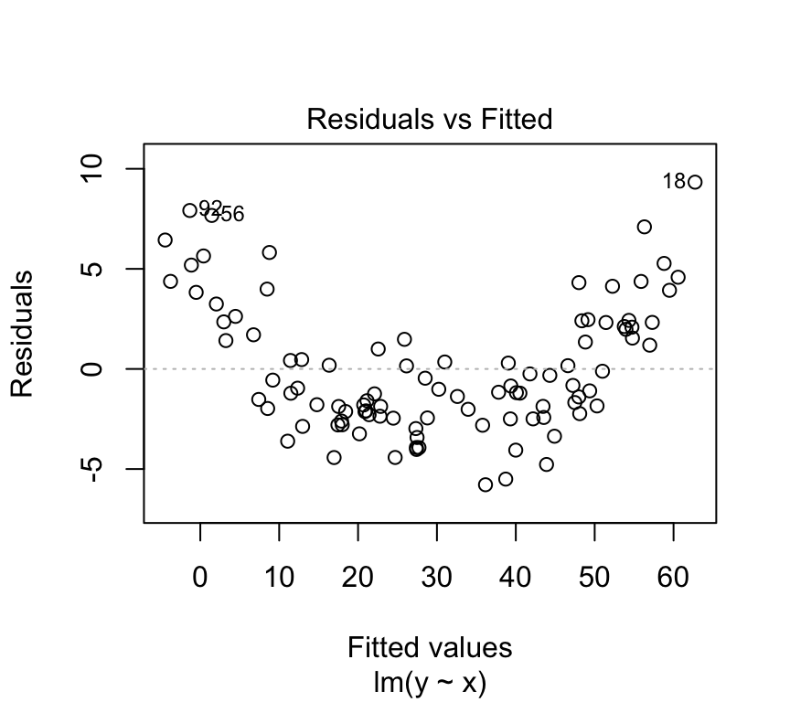
There is very little evidence of any pattern in the residuals. This data is simulated with a truly linear relationship, so we would not expect to see any pattern in the residuals.
(e) No outliers
An outlier is a data point that is very different from the other data points. Outliers can have a big effect on the results of a regression analysis. They can pull the line of best fit towards them, and make the line of best fit a poor representation of the data.
Lets again look at the blood pressure versus age data:
There are no obvious outliers in this data. The data points are all close to the line of best fit. This is a good sign that the line of best fit is a good representation of the data.
Data points that are far from the mean of the independent variable have a large effect on the value of the slope. These data points have a large leverage. They are data points that are far from the other data points in the \(x\) direction.
We can think of this with the analogy of a seesaw. The slope of the line of best fit is like the pivot point of a seesaw. Data points that are far from the pivot point have a large effect on the slope. Data points that are close to the pivot point have a small effect on the slope.
A measure of distance from the pivot point is called the \(leverage\) of a data point. In simple regression, the leverage of individual \(i\) is defined as
\(h_{i} = (1/n) + (x_i-\overline{x})^2 / SSX\).
where \(SSX = \sum_{i=1}^n (x_i - \overline{x})^2\). (Sum of Squares of \(X\))
So, the leverage of a data point is inversely related to \(n\) (the number of data points). The leverage of a data point is also inversely related to the sum of the squares of the \(x\) values. The leverage of a data point is directly related to the square of the distance of the \(x\) value from the mean of the \(x\) values.
More intuitively perhaps, the leverage of a data point will be greater when the are fewer other data points. It will also be greater when the distance from the mean value of \(x\) is greater.
Going back to the analogy of a seesaw, with data points as children on the seesaw, the leverage of a data point is like the distance from the pivot a child sits. But we also have children of different weights. A lighter child will have less effect on the tilt of the seesaw. A heavier one will have a greater effect on the tilt. A heavier child sitting far from the pivot will have a very large effect.
The size of the residuals are like the weight of the child. Data points with large residuals have a large effect on the slope of the line of best fit. Data points with small residuals have a small effect on the slope of the line of best fit.
So the overall effect of a data point on the slope of the line of best fit is a combination of the leverage and the residual. This quantity is called the \(influence\) of a data point.
Let’s add a rather extreme data point to the blood pressure versus age data:
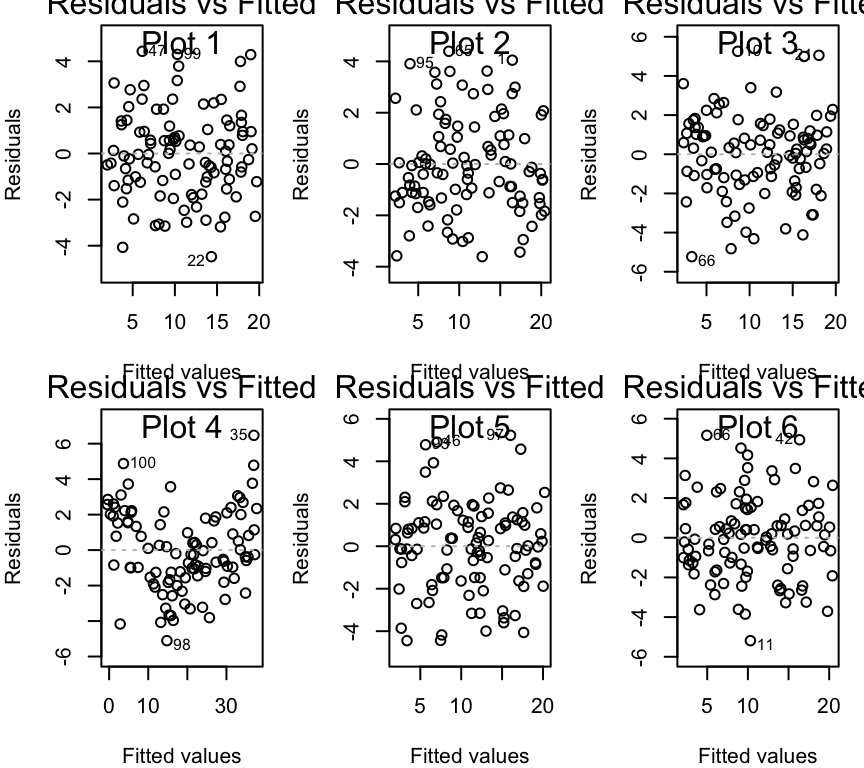
This is a bit ridiculous, but it is a good example of an outlier. The data point is far from the other data points. It has a large residual. And it is a long way from the pivot (the middle of the \(x\) data) so has large leverage.
We can make a histogram of the residuals and see that the outlier has a large residual:
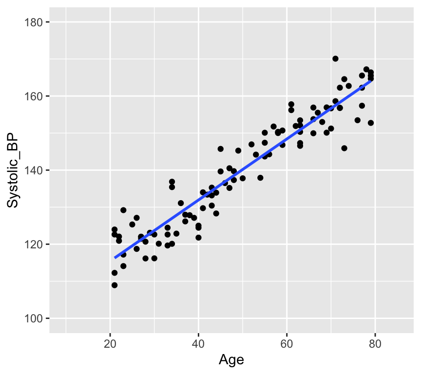
And we can see that the leverage is large.
There is a graph that we can look at to see the influence of a data point. This is called a \(Cook's\)\(distance\) plot. The Cook’s distance of a data point is a measure of how much the slope of the line of best fit changes when that data point is removed. The Cook’s distance of a data point is defined as
where \(\hat{y}_j\) is the predicted value of the dependent variable for data point \(j\), \(\hat{y}_{j(i)}\) is the predicted value of the dependent variable for data point \(j\) when data point \(i\) is removed, \(p\) is the number of parameters in the model (2 in this case), \(MSE\) is the mean squared error of the model.
plot(bp_age_model_outlier, which=5)
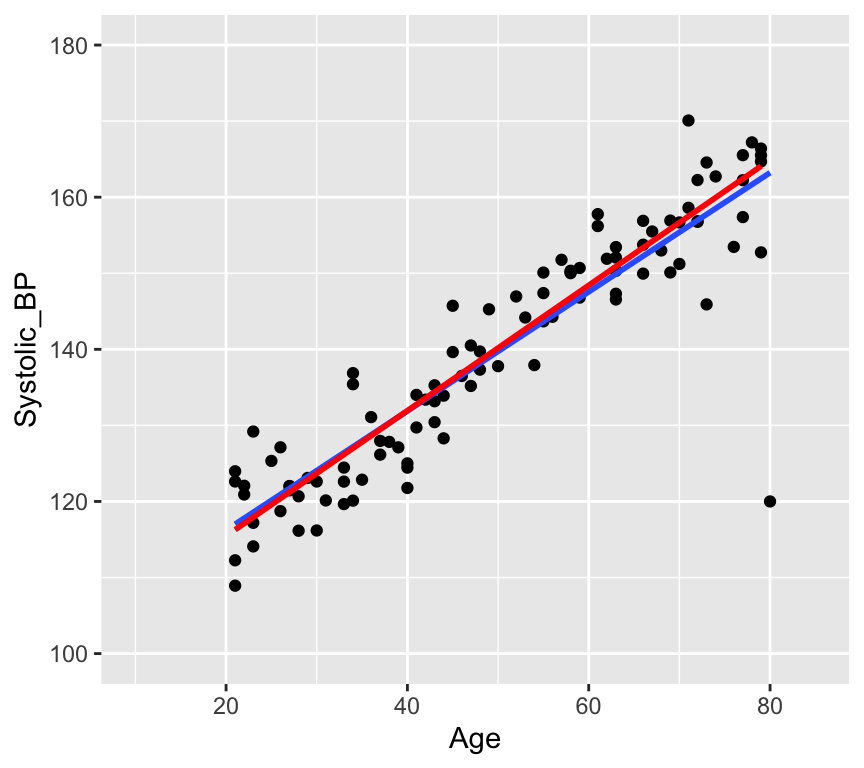
But does it have a large influence on the value of the slope? In the next graph we show the line of best fit with the outlier (blue line) and without the outlier (red line).
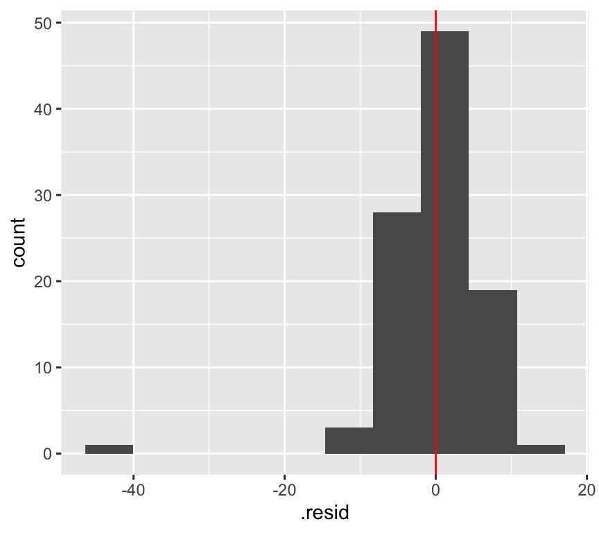
No, the outlier doesn’t have much influence on the slope. The outlier has a large leverage. It is far from the pivot. But it does not have such a large effect (influence) on the slope. This is in large part because there are a lot data points (100) that are quite tightly arranged around the regression line.
Graphical illustration of the leverage effect
Data points with \(x_i\) values far from the mean have a stronger leverage effect than when \(x_i\approx \overline{x}\):
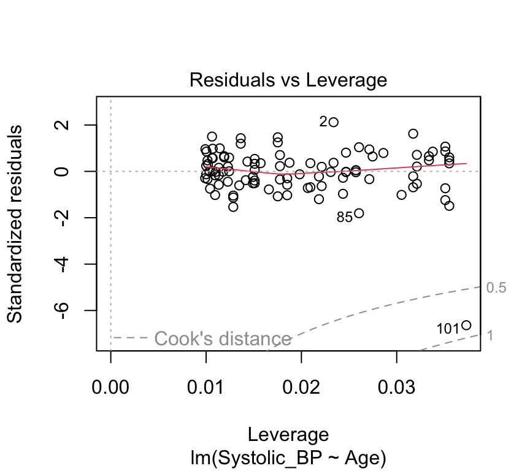
The outlier (red circle) in the middle plot “pulls” the regression line in its direction and has large influence on the slope. THe outlier (red circle) in the right plot has less influence on the slope because it is closer to the mean of \(x\).
Leverage plot (Hebelarm-Diagramm)
In the leverage plot, (standardized) residuals \(\tilde{R_i}\) are plotted against the leverage \(H_{ii}\) :
plot(bp_age_model, which=5, add.smooth =FALSE)
Critical ranges are the top and bottom right corners!!
Here, observations 71, 85, and 87 are labelled as potential outliers.
Some texts will give a rule of thumb that points with Cook’s distances greater than 1 should be considered influential, while others claim a reasonable rule of thumb is \(4 / ( n - p - 1 )\) where \(n\) is the sample size, and \(p\) is the number of \(beta\) parameters.
The autoplot() function from the ggfortify package
So far we have used the built-in plot() function for linear models to create the model checking plots. Another option is to use the autoplot() function from the ggfortify package. This function creates the same four model checking plots, but doesn’t require the par(mfrow=c(2,2)) command to arrange the plots in a 2x2 grid, so is slightly more convenient to use. Of course, you do need to ensure that the ggfortify package is installed and loaded.
(At the time of writing, this use of autoplot() causes a warning message to be printed. This is a known issue with the ggfortify package. You can safely ignore this warning message for now.)
What can go “wrong” during the modeling process?
Answer: a lot of things!
Non-linearity. We assumed a linear relationship between the response and the explanatory variables. But this is not always the case in practice. We might find that the relationship is curved and not well represtented by a straight line.
Non-normal distribution of residuals. The QQ-plot data might deviate from the straight line so much that we get worried!
Heteroscadisticity (non-constant variance). We assumed homoscadisticity, but the residuals might show a pattern.
Data point with high influence. We might have a data point that has a large influence on the slope of the line of best fit.
What to do when things “go wrong”?
Now: Transform the response and/or explanatory variables.
Now: Take care of outliers.
Later in the course: Improve the model, e.g., by adding additional terms or interactions.
Later in the course: Use another model family (generalized or nonlinear regression model).
Dealing with non-linearity
Here’s another example of \(y\) and \(x\) that are not linearly related:
One way to deal with this is to transform the response variable \(Y\). Here we try two different transformations: \(\log_{10}(Y)\) and \(\sqrt{Y}\).
Square root transform of the response variable \(Y\):
p3 <-ggplot(eg_data, aes(x = x, y = sqrt_y)) +geom_point() +geom_smooth(formula = y ~ x, method ="lm", se =FALSE)m2 <-lm(sqrt_y ~ x, eg_data)p4 <-ggplot(mapping =aes(x =fitted(m2), y =residuals(m2))) +geom_point() +geom_hline(yintercept =0, linetype ="dashed") +geom_smooth(formula = y ~ x, method ="loess")(p1 + p2) / (p3 + p4)
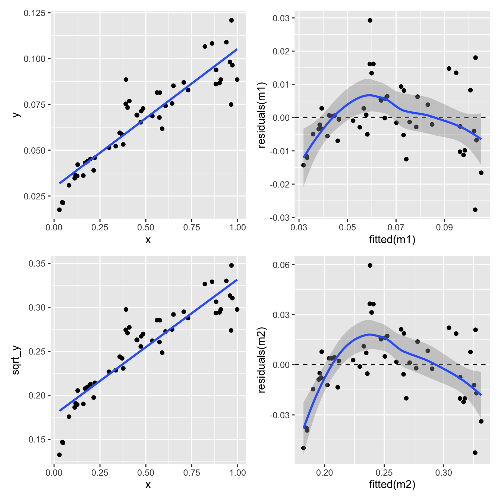
Not great.
Log transformation of the response variable \(Y\):
p5 <-ggplot(eg_data, aes(x = x, y = log_y)) +geom_point() +geom_smooth(formula = y ~ x, method ="lm", se =FALSE)m3 <-lm(log_y ~ x, eg_data)p6 <-ggplot(mapping =aes(x =fitted(m3), y =residuals(m3))) +geom_point() +geom_hline(yintercept =0, linetype ="dashed") +geom_smooth(formula = y ~ x, method ="loess")(p1 + p2) / (p3 + p4) / (p5 + p6)
Nope. Still some evidence of non-linearity.
What about transforming the explanatory variable \(X\) as well?
p7 <-ggplot(eg_data, aes(x = log_x, y = log_y)) +geom_point() +geom_smooth(formula = y ~ x, method ="lm", se =FALSE)m4 <-lm(log_y ~ log_x, eg_data)p8 <-ggplot(mapping =aes(x =fitted(m4), y =residuals(m4))) +geom_point() +geom_hline(yintercept =0, linetype ="dashed") +geom_smooth(formula = y ~ x, method ="loess")p7 + p8
Let’s look at the four model checking plots for the log-log-transformed data:
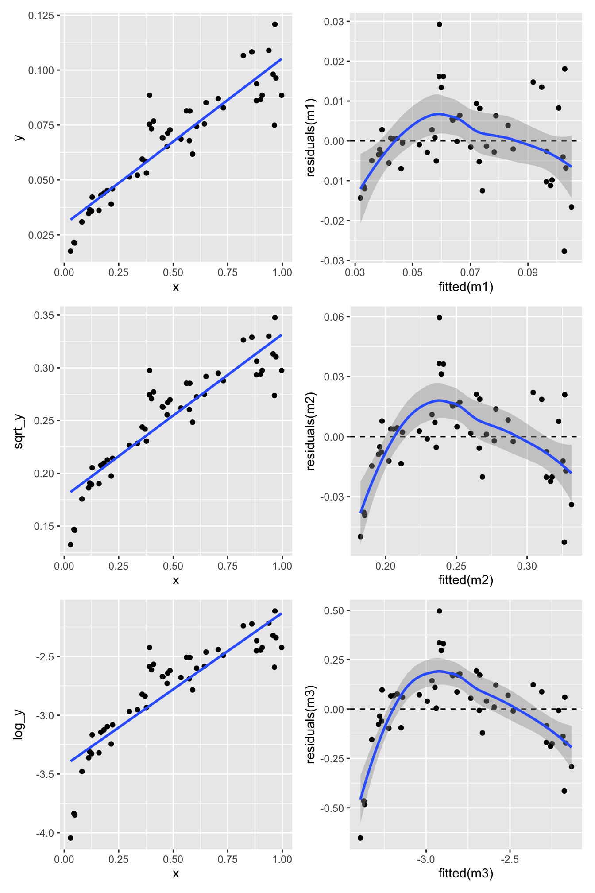
All looks pretty good except for the scale-location plot, which shows a bit of a pattern. But overall, this looks much better than our original model.
But… how to know which transformation to use…? It’s a bit of trial and error. But we can use the model checking plots to help us.
Very very important is that we do this trial and error before we start using the model. E.g., we don’t want to jump from the aeroplane and then find out that our parachute is not working properly! And then try to fix the parachute while we are falling….
Likewise, we must not start using the model and then try to fix it. We need to make sure our model is in good working order before we start using it.
One of the traps we could fall into is called “p-hacking”. This is when we try different transformation until we find one that gives us the result we want, for example significant relationship. This is a big no-no in statistics. We need to decide on the model (including any transformations) before we start using it.
Common transformations
Which transformations could be considered? There is no simple answer. But some guidelines. E.g. if we see non-linearity and increasing variance with increasing fitted values, then a log transform may improve matter.
Some common and useful transformations are:
The log transformation for concentrations and absolute values.
The square-root transformation for count data.
The arcsin square-root \(\arcsin(\sqrt{\cdot})\) transformation for proportions/percentages.
Transformations can also be applied on explanatory variables, as we saw in the example above.
Outliers
What do we do when we identify the presence of one or more outliers?
Start by checking the “correctness” of the data. Is there a typo or a decimal point that was shifted by mistake? Check both the response and explanatory variables.
If not, ask whether the model could be improved. Do reasonable transformations of the response and/or explanatory variables eliminate the outlier? Do the residuals have a distribution with a long tail (which makes it more likely that extreme observations occur)?
Sometimes, an outlier may be the most interesting observation in a dataset! Was the outlier created by some interesting but different process from the other data points?
Consider that outliers can also occur just by chance!
Only if you decide to report the results of both scenario can you check if inclusion/exclusion changes the qualitative conclusion, and by how much it changes the quantitative conclusion.
Removing outliers
It might seem tempting to remove observations that apparently don’t fit into the picture. However:
Do this only with greatest care e.g., if an observation has extremely implausible values!
Before deleting outliers, check points 1-5 above.
When removing outliers, you must mention this in your report.
During the course we’ll see many more examples of things going at least a bit wrong. And we’ll do our best to improve the model, so we can be confident in it, and start to use it. Which we will start to do in the next lesson. But before we wrap up, some good news…
Its a kind of magic…
Above, we learned about linear regression, the equation for it, how to estimate the coefficients, and how to check the assumptions. There was a lot of information, and it might seem a bit overwhelming.
You might also be aware that there are quite a few other types of statistical model, such as multiple regression, t-test, ANOVA, two-way ANOVA, and ANCOVA. It could be worrying to think that you need to learn so much new information for each of these types of tests.
But this is where the kind-of-magic happens. The good news is that the linear regression model is a special case of what is called a general linear model, or just linear model for short. And that all the tests mentioned above are also types of linear model. So, once you have learned about linear regression, you have learned a lot about linear models, and therefore also a lot about all of these other tests as well.
Moreover, the same function in R ‘lm’ is used to make all those statistical models Awesome.
So what is a linear model?
A linear model is a model where the relationship between the dependent variable and the independent variables is linear. That is, the dependent variable can be expressed as a linear combination of the independent variables. An example of a linear model is:
where: \(y\) is the dependent variable, \(\beta_0\) is the intercept, \(\beta_1, \beta_2, \ldots, \beta_p\) are the coefficients of the independent variables, \(x_1, x_2, \ldots, x_p\) are the independent variables, \(\epsilon\) is the error term.
In contrast, a non-linear model is a model where the relationship between the dependent variable and the independent variables is non-linear. An example of a non-linear model is the exponential growth model:
where: y is the dependent variable, \(\beta_0\) is the intercept, \(\beta_1, \beta_2\) are the coefficients of the independent variables, \(x\) is the independent variable, \(\epsilon\) is the error term.
Keep in mind that a model with a quadratic term is still a linear model. For example:
In this chapter we learned about first steps of regression analysis. Specifically, we learned about to:
Motivation for regression analysis.
The simple linear regression model.
Estimation of the coefficients (intercept and slope) using the least squares method.
How to model the errors (residuals) and the assumptions of linear regression.
How to check the assumptions of linear regression using model checking plots.
What can go wrong during the modeling process, and how to deal with it.
With all that in place, we can be sure that when we use a linear regression model, we can trust the results it gives us. In the next chapter, we will start to use linear regression models to answer questions! This involves things such as hypothesis testing, confidence intervals, and prediction. Exciting times ahead!
Further reading
There are many good books and online resources about regression models, fitting them, and checking their assumptions. Here are some suggestions for further reading:
For a more mathematical treatment, including matrix representation, see Chapter 2 of Faraway, J. J. (2016). Linear models with R (2nd ed.). Chapman and Hall/CRC. Link
The same book (Faraway) covers Diagnostics and model checking in Chapter 5.
For a complementary perspective on regression, see Chapter 7 of The New Statistics with R, by Andy Hector.
Extras
Tests for normality
We often want to know if our data or our residuals are not normally distributed. You’ve now done a lot with QQ-plots to examine how normally distributed your data are. Some people also like to have a statistical test for normality. Here I’ll show some tests.
Shapiro–Wilk test on normally distributed data
The Shapiro–Wilk test is frequently used.
Null hypothesis: the data are normally distributed
Alternative hypothesis: the data are not normally distributed
Let’s make some data and look at its distribution and QQ-plot:
Yes, this is the distribution of data that come from a normal distribution.
And the QQ-plot:
qqnorm(x)qqline(x)
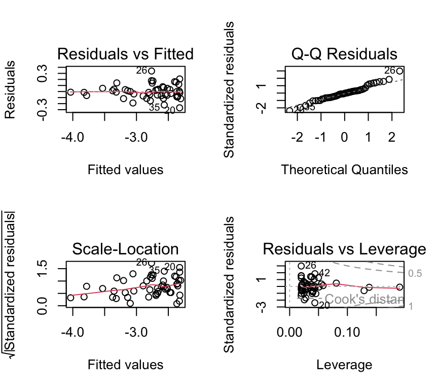
Looks pretty normal. Let’s see what the Shapiro–Wilk test tells us:
shapiro.test(x)
Shapiro-Wilk normality test
data: x
W = 0.99467, p-value = 0.9658
The p-value for the test is large (e.g. p ≈ 0.99). When we get a large p-value like this, it means we cannot reject the null hypothesis. (A small p-value, say p < 0.05, would cause us to reject the null hypothesis.) Hence, here, we cannot reject the null hypothesis that the data are normally distributed. (Note that, as usual, technically we cannot accept the null hypothesis.)
So we can happily continue with any work that assumes normally distributed residuals.
Shapiro–Wilk test on non-normally distributed data
Now let’s repeat this exercise using data that we know are not normally distributed.
x <-runif(100)ggplot(data.frame(x=x), aes(x=x)) +geom_histogram(bins =10)
This is clearly not normally distributed data.
And the QQ-plot:
qqnorm(x)qqline(x)
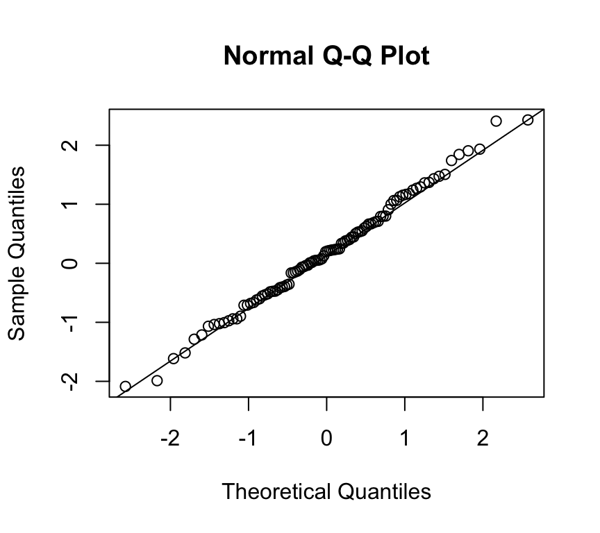
OK, we don’t need to do a test to see that this is not normally distributed data. But let’s do it anyway:
shapiro.test(x)
Shapiro-Wilk normality test
data: x
W = 0.92167, p-value = 1.728e-05
Now the p-value is small, so we reject the null hypothesis that the data are normally distributed. Now we can’t continue with methods, such as linear models, that assume normally distributed residuals.
What if we have fewer data points?
What about if we have fewer data points, say 30? And let’s do the test lots of times and count how often we reject the null hypothesis.
x <-replicate(1000, shapiro.test(runif(30))$p.value)sum(x <0.05)
[1] 371
So we reject the null hypothesis in about 38% of the trials. That is, we don’t reject the hypothesis that the data are normally distributed in nearly 40% of cases, even though the data came from a uniform distribution!
Shapiro–Wilk test on real data
How useful this (or any) test of normality is depends on our data.
If we have a large sample, the test has very high power, and we can easily reject the null hypothesis due to tiny deviations from normality.
If we have a small sample, we could easily fail to reject the null hypothesis even when the generating process does not create normally distributed data. The test has low power for small samples.
Here’s an example of the latter point. We make data that has 5000 numbers sampled from a normal distribution, and then add a bit of non-normality:
Shapiro-Wilk normality test
data: x
W = 0.99966, p-value = 0.5779
Uh oh! The test rejects the null hypothesis.
So what do we do?
Actually, we might be focusing on the wrong question. Instead of asking how close to normally distributed our data are, we should consider:
how robust our analysis is to deviations from normality, and
which types of deviations from normality actually matter.
Generally speaking, linear models are robust to deviations from normality.
This means:
we can be relatively happy that the Shapiro–Wilk test lacks power with small samples, and
we should be cautious about rejecting normality when sample sizes are large.
More insight from QQ-plots
It is quite subjective to decide if a QQ-plot looks ok, or not. And if the tests are not so useful, what can we do?
One option is to make use of simulation to see what kind of variation we can expect in QQ-plots, even when the data really do come from a normal distribution.
Here is an example of such a plot (the code to make it is below):
The red dots are is the qqplot of the observed data. The grey lines are qqplots of normally distributed random data, with characteristics equal to those assumed by the model. Each grey line is a separate draw of random numbers. So the grey lines give an idea of what kind of spread one can expect even when the data really do come from a normal distribution. If the red points lie within the grey region, we’re good to go!
Some of the upper red dots are at the edge of grey region, suggesting there might be minor deviations from normality. Hence, even with some help given by showing what we can expect to see, we still have to make an arbitrary / rather subjective decision about when deviations are bad enough to warrant doing something, and when they are not so bad, and we can continue with the assumption of normality. Much of data analysis is more subjective that we might expect given that it is quantitative!
Here is the code to make the graph, using some example data:
## function adapted from## http://www.nate-miller.org/1/post/2013/03/how-normal-is-normal-a-q-q-plot-approach.htmlqqfunc <-function(model, num.reps) { N <-length(resid(model)) sigma <-summary(model)$sigma x <-rnorm(N, 0, sigma) xx <-qqnorm(x, plot.it=F) xx$y <- xx$y[order(xx$x)] xx$x <- xx$x[order(xx$x)]plot(xx$x, scale(xx$y), pch=19, col="#00000011", type="l",xlab="Theoretical quantiles",ylab="Standardised residuals")##qqline(x)for(i in2:num.reps) { x <-rnorm(N, 0, sigma) xx <-qqnorm(x, plot.it=F) xx$y <- xx$y[order(xx$x)] xx$x <- xx$x[order(xx$x)]points(xx$x, scale(xx$y), pch=19, col="#00000011", type="l") } xx <-qqnorm(m1$residuals, plot.it=F)points(xx$x, scale(xx$y), col="red", pch=19)}## load some useful packageslibrary(readr)library(tidyverse)library(ggfortify)## load the data## Here I'm loading it direct from online where the dataset are storedfhc <-suppressMessages(readr::read_csv("https://raw.githubusercontent.com/opetchey/BIO144_Practicals_WAs/refs/heads/main/assets/datasets/financing_healthcare.csv",show_col_types =FALSE))## tell me which countries are in the dataset#unique(fhc$country)## tell me which years are in the dataset#unique(fhc$year)## give me the rows in which both child mortality and health care expenditure are not NA#filter(fhc, !is.na(child_mort) & !is.na(health_exp_total))## Wrange the datafhc1 <- fhc %>%filter(year==2013) %>%## only data fro 2013 pleaseselect(year:continent, health_exp_total, child_mort, life_expectancy) %>%## only these columns pleasedrop_na() ## drop rows with any NAs## From last weeks work we know we need to log transform the datafhc1 <-mutate(fhc1,log10_health_exp_total=log10(health_exp_total),log10_child_mort=log10(child_mort))## plot the relationship between health care expenditure and child mortality#ggplot(data=fhc1, aes(x=health_exp_total, y=child_mort)) + geom_point()## fit the linear model of the log transformed data and assign it to object named m1m1 <-lm(log10_child_mort ~ log10_health_exp_total, data=fhc1)## Here we run the function that makes the qqplot with some random samples from a normal distributionqqfunc(m1, 100)abline(0,1)